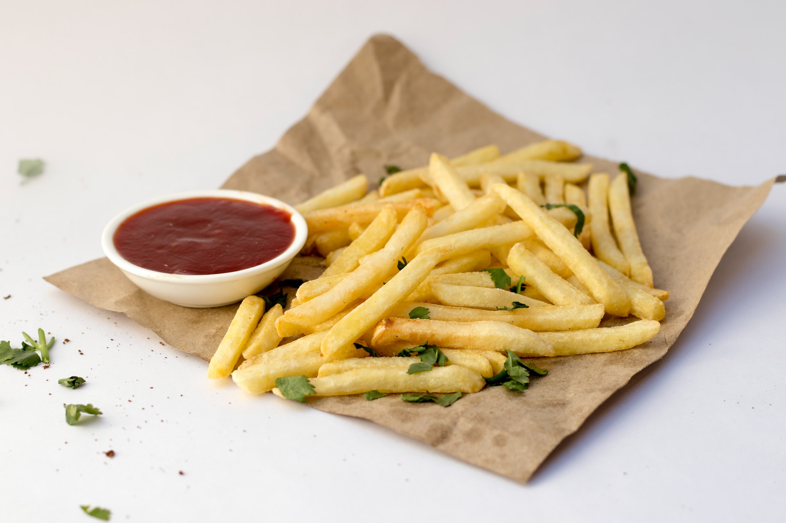

French Fries

source of the recipe: https://www.allrecipes.com/recipe/35963/french-fried-potatoes/
Meal's Description
Best French Fries you can actually make yourself. These won't soak up much greese and will get crunchy.
Ingredients
- ⅓ cup white sugar
- 2 cups warm water
- 2 large russet potatoes - peeled, and sliced into 1/4 inch strips
- 6 cups vegetable oil for frying
- salt to taste
Steps
- In a medium bowl, dissolve the sugar in warm water.
- Soak potatoes in water mixture for 15 minutes. Remove from water, and dry thoroughly on paper towels.
- Heat oil in deep-fryer to 375°F (190°C).
- Add potatoes, and cook until golden, 5 to 6 minutes. drain on paper towels.
- Season with salt to taste.